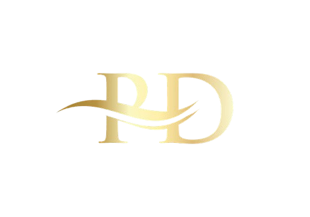

PD4
Door: Joey Stinkens
Inhoudsopgave
- 1. Waarom deze website?
- 2. Elevator pitch
- 3. Uitkomsten van de Big Five personaliteitstests + reflectie
- 4. Uitkomst van de kleurentest van De Caluwe + reflectie + uitwerking voorspelopdracht
- 5. Opdrachten over persoonlijk leiderschap
- 6. Uitkomst van de opdracht Circle of Concern en circle of influence
- 7. Showcase portfolio
- 8. Wat wil ik?
Waarom deze website?
Voor mijn PD opdracht heb ik ervoor gekozen om deze website te maken als een creatieve vorm van presentatie voor mijn ‘talentenpaspoort’. Ik koos specifiek voor dit project omdat het me een leuke en leerzame uitdaging leek.
Na mijn studie ga ik een tussenjaar nemen om me te verdiepen in het maken van soortgelijke projecten en videogames. Door nu al een website te ontwerpen en te bouwen, doe ik niet alleen kennis op, maar bereid ik me ook voor op mijn plannen voor na mijn studie.
Voor mijn PD lever ik zowel een pdf als een link naar de website in. De pdf dient als back-up en bewijs dat er na de deadline geen aanpassingen meer zijn gedaan, aangezien ik nog vrij nieuw ben in het maken van websites en graag verder wil werken aan dit project na de beoordeling.
Hieronder vind je de link naar de website. Scroll helemaal naar beneden en klik vervolgens bij mijn portfolio op het PD project om deze op de website zelf te zien.
website: https://shadewolfy.github.io/Portfolio/
direct: https://shadewolfy.github.io/Portfolio/project-detail.html
Elevator pitch
Aangenaam. Ik zal me even voorstellen. Mijn naam is Joey Stinkens. Ik ben een 4e-jaars student aan de Haagse hogeschool. Daar studeer ik bij de HBO-ICT opleiding waar ik Innovative Development volg. Hier leer ik voornamelijk de principes van Design thinking en goede samenwerking door op projectbasis te werken. Daarnaast leer ik ook van alles en nog wat nodig is om het project af te ronden. Ik heb wel eens gewerkt aan de front-end tot aan de back-end met alles daartussenin. Ik heb hierdoor een hele brede kennis op het ICT-vakgebied. Ik hou er zelf enorm van om mensen te helpen. En dat lijkt mij het allerleukst om te doen op het ICT veld.
Uitkomsten van de Big Five personaliteitstests + reflectie
Ik kan mijzelf wel vinden in deze score. De punten komen overeen met mijn normen en waarden. Ook zie ik mijzelf wel in de werkwijzers die elke van die categorieën representeren. Ik ben het volledig eens met dat mijn natuurlijke reacties zo hoog zijn. Negatieve dingen komen bij mij heel hard binnen en kan ik degelijk last van hebben. Ook raak ik in paniek als iets niet gaat zoals het hoort te gaan. Ik zie mijzelf alleen niet zo zitten met een lage score voor gewetensvolheid. Daar staat dat ik spontaan ben en ongeorganiseerd. Dit is totaal niet wie ik ben. In mijn sociale leven ben ik dat wel meer maar in mijn professionele werkleven ben ik totaal niet spontaan of ongeorganiseerd.
Voorbeeld 1: Extraversie
Ik vind mijzelf erg thuis met een hoge extraversie score. Ik ben zeker zeer extravert. Een zaterdagavond waar ik niet met vrienden afspreek is voor mij niet leuk en geeft mij totaal geen gevoel dat ik uitgerust heb van het weekend. Ook staat er dat ik graag directe leiderschapsrollen vervul. Hier ben ik het ook mee eens.
Ik ben toen ik 6 jaar was op de scouting gegaan. Dit heb ik gedaan tot ik 19 jaar was. Rond een jaar of 13 was het een keer zo dat we gingen zeilen met zijn allen. De boots en kwartier (de kapitein en eerste stuurman) waren die dag niet aanwezig. Hierdoor zouden we niet kunnen varen. Maar omdat ik uitstekende leiderschap skills had laten zien die dag was ik de eerstvolgende die een boot mocht leiden. Daarna ben ik op 14-jarige leeftijd 3e geworden in het Nederlands kampioen zeilen als Boots. Omdat je moet samenwerken op zo’n schip is het belangrijk dat je een goeie leider hebt, wat ik dus was.
Voorbeeld 2: Natuurlijke reacties
Ik kan merken dat negatieve dingen mijn enorm beïnvloeden. Al gebeurt er iets wat ik heb gedaan wat ook maar een klein beetje vervelend kan zijn voor een ander dan geef ik mijzelf altijd de schuld en straf ik mijzelf onnodig erg. Ik kan me nog herinneren dat ik tijdens een zeilwedstrijd een boot niet in de gaten had waardoor we tegen elkaar waren gebotst. Ook al had ik voorrang was er iemand uit mijn boot gewond geraakt. Gelukkig was het maar een gigantische blauwen plek en niks ergers. Ik weet dat ik dagenlang mijn excuses heb aangeboden aan die persoon. Ook al zei hij dat het al goed was maar in mijn hoofd wou ik het niet accepteren.
Dit is tegelijk ook wat ik van mijzelf heel graag wil verbeteren. Ik merk dat iets negatief al mijn positiviteit en energie uit mijn dag kan halen. Het zit mij dan zo hoog dat het uren duurt voordat ik ben gekalmeerd en weer “normaal” aan het doen ben. Dit wil ik bereiken door mijzelf minder aan te trekken van dingen en minder zorgen te maken om van alles en nog wat.
Uitkomst van de kleurentest van De Caluwe + reflectie + uitwerking voorspelopdracht

Zoals je op de resultaten kan zien ben ik het meest blauw. Dit houdt in dat ik een planner en regelaar ben. Ook zie ik bij mijzelf dat ik heel erg van structuur hou in mijn projecten. Als dit ontbreekt, probeer ik zelf een takenlijst en een planning te maken. Dit zie ik inderdaad wel in mijzelf terug. In de bijlage vind je de complete rapport van mijn resultaten.
Klik hier om de resultaten te bekijken.
Uitwerking Interview
Volgens het interview zou ik mijn eerste werkdag gaan werken bij een grote organisatie. Hier zou ik een mega-opdracht krijgen. Alleen is het niet helemaal duidelijk wat de opdracht gevers willen. Omdat het een grote organisatie is heeft niemand een concreet antwoord, maar willen ze wel dat ik dat probleem oplos. De oplossing hiervoor moet ik zelf uitzoeken, maar door mijn achtergrond in ID zou het mij vast wel lukken om veel dingen zelf uit te zoeken.
Tips
- Tip 1: misschien een rondje lopen aan het begin om jezelf te introduceren en je collega’s beter te leren kennen.
- Tip 2: Je staat er niet alleen voor. Vraag om hulp en durf ook vragen te stellen.
- Tip 3: Creëer een goed duidelijk plan wat je gaat doen. Dit plan moet ook makkelijk te begrijpen zijn voor andere.
- Tip 4: Zet je ID vaardigheden in. Je diverse kennis die je hebt kan altijd van pas komen. Misschien niet alleen voor jezelf maar ook voor andere. Help andere dus ook.
- Tip 5: Schrijf zo veel mogelijk op wat je te horen krijgt. Een eerste dag kan overweldigend zijn maar zo kan je orde scheppen in de chaos.
Opdrachten over persoonlijk leiderschap
Wees proactief
Reactief: “Ik krijg geen goede feedback”
Proactief: Ik stel niet genoeg de juiste vragen om feedback te verwerken.
Reactief: “Het lukt niet om een fasegesprek in te plannen”
Proactief: Ik moet met meerdere datums komen om een fasegesprek in te plannen
Reactief: “Mijn begeleider reageert niet op mijn e-mail”
Proactief: Ik probeer de begeleider op meerdere manieren te bereiken en desnoods zoek ik hem op school op.
Begin met het einde voor ogen
De docent zal vertellen dat ik doorzettingsvermogen en leergierigheid heb ingezet.
Joey heeft tijdens zijn tijd bij ons echt heeft laten zien wat doorzettingsvermogen en leergierigheid betekenen. Tijdens zijn meeloopstage wist hij een geweldige 8 te behalen, en dat is niet zomaar gekomen. Het was het resultaat van hard werken, jezelf openstellen voor nieuwe uitdagingen, en altijd streven naar verbetering. Wat mij vooral opviel, en waar ik van de stagebegeleider ook veel over heb gehoord, is jouw enthousiasme en toewijding.
Je bent iemand die altijd klaarstaat om anderen te helpen, zelfs als dat betekent dat je daar zelf extra tijd in moet steken. Dat maakt je niet alleen een fijne collega, maar ook een gezellige en waardevolle persoon om mee samen te werken. Je mag ontzettend trots zijn op jezelf!
Belangrijke zaken eerst
Eerst begrijpen dan begrepen worden
Mijn klasgenoot was het hier mee eens. Ik communiceer meer om te begrijpen. Ik sta alleen niet altijd open voor want andere zeggen, maar ik doe wel mijn best om hun te begrijpen. In een gesprek ben ik meer het luisterende oor, ik ben goed in vragen stellen over de dingen die ze net verteld hebben. Ik denk dat het meer een probleem wordt dat ik niet begrepen wordt.
Creëer synergie
De synergie die wij heel erg hebben in ons groepje is goed terug te zien in de stepping stone UI. Wat wij hier doen is dat er op deze stepping stone 2 mensen met ervaring zitten en 2 mensen, waaronder ik, die het graag willen leren. Wij proberen het ons allemaal zelf te leren maar mochten wij vragen hebben kunnen wij het altijd aan die 2 groepsgenoten met ervaring vragen.
Houd de zaag scherp
Wat ik moet doen om mijn zaag scherp te houden is mijn rust nemen wanneer ik tijd voor mijzelf heb en veel contact met vrienden hebben in het weekend. Het beste kom ik tot rust wanneer ik met mijn vrienden op een rave of in de kroeg staan. Het is in eerste instantie wat drukker maar achteraf voel ik mij dan altijd meer tot rust dan als ik een avond alleen thuis blijf. Naast dit allemaal ben ik ook actief in de sportschool en let ik op wat ik eet zodat ik gezond en gelukkig blijf om uit te kunnen blinken op werk.
Uitkomst van de opdracht Circle of Concern en circle of influence
Circle of concern
Competitie: Ik maak me soms zorgen over de concurrentie in de ICT-sector. Aangezien ik graag iets wil gaan doen met programmeren en ik het idee heb dat ik het toch wat minder kan dan mijn klasgenoten ben ik zeer bang dat ik later zonder baan kom te zitten.
Gezondheid ouders: Begin dit semester was ik helemaal een wrak. Mijn moeder had toen nieuws gekregen dat ze misschien kanker zou hebben. Ik heb nachten niet geslapen waardoor mijn prestaties in school aanzienlijk slechter werden. Gelukkig allemaal negatief, maar als nog zoiets gebeurd zal ik waarschijnlijk weer hetzelfde ervaren.
Rondkomen school: De kosten van studeren wegen zwaar op mij. Ik werk nu al mijn hele school carriere 2 dagen in de week, naast al het studeren, om deze opleiding te kunnen betalen. Ik heb vaak discussies met docenten gehad over het feit dat ik soms niet op woensdag aanwezig kon zijn omdat ik toch deze opleiding moest betalen.
Appels en peren vergelijken: Ik vergelijk mijzelf te veel met andere mensen uit de ICT-sector. Dit geeft mij altijd een slecht beeld over mijzelf. Vooral omdat ik 9 van de 10 keer weet dat hun al veel langer ervaring hebben in dit gebied dan ik
Politieke staat van de wereld: De voortdurende veranderingen in de politiek en wereldgebeurtenissen zorgen voor veel bezorgdheid. Het is nooit zeker of morgen nog hetzelfde gaat zijn als vandaag.
Circle of influence
Programmeer vaardigheden: Ik weet dat ik beter ben in andere dingen die ook met programmeren te maken hebben dan het daadwerkelijk code typen, maar het is altijd de jongensdroom van mijzelf geweest om dit goed te kunnen.
Afleidingsgevoeligheid: Tijdens mijn werk raak ik makkelijk en vaak mijn concentratie kwijt, waardoor ik hier uren kwijt aan kan zijn.
Conflicten hantering: Het gaat nu een stuk beter dan voorheen, maar ik heb altijd al het probleem gehad dat ik snel mijn geduld verlies en uit mijn slof schiet. Dit is natuurlijk hoogst onprofessioneel en moet hard aan gewerkt worden
Vriendschappelijke relaties: Ik merk dat ik door alle drukte te weinig tijd heb voor mijn vrienden. Dit is iets wat ik graag weer meer wil oppakken.
Showcase Portfolio
Brainwaves - Jet besturen van een pc met je hersengolven
In mijn eerste semester ID heb ik gewerkt aan het kunnen besturen van een pc met je hersengolven. Dit hebben we bereikt door een kinderspeelgoed, de Star Wars Force Trainer II, die een hersengolvenmeet-chip bevat, via Bluetooth te verbinden met een pc. Op de achtergrond draaide een algoritme dat de binnenkomende data verzamelde, deze data verwerkte door middel van parsing, en vervolgens een Fast Fourier Transform (FFT) uitvoerde om de gegevens om te zetten naar toetsencommando's voor de computer. Deze toetsen werden vervolgens gebruikt om een golf videogame aan te sturen.
Samen met een klasgenoot was ik verantwoordelijk voor de data-logica. Tijdens dit project heb ik ook mijn favoriete programmeertaal ontdekt: Rust.
IND - Het bereiken van asielzoekers via biometrische kenmerken
In mijn 2e semester van ID heb ik gewerkt voor de overheidsafdeling de IND. Zij hadden het probleem dat belangrijke brieven, zoals bijvoorbeeld gespreks afspraken, niet op tijd bij asielzoekers aankwamen. Dit hebben we opgelost door een systeem te ontwikkelen waar, je met behulp van een vingerafdruk, je post in kan zien en uit laten printen.
Zelf was ik verantwoordelijk voor de ontwikkeling van de API en de integratie van de vingerafdrukscanner. Dit heeft mijn kennis in de back-end verdiept en mij voor het eerst laten kennis maken met het programmeren van Arduino’s.
Goede voornemens - App en spiegel die je helpt met het volhouden van je goede voornemens
In mijn derde semester van ID heb ik gewerkt aan mijn eigen studentenproject: het Goede Voornemens Project. Het doel van dit project was om mensen te helpen die moeite hebben om hun goede voornemens na te komen. Aangezien dit onderwerp vrij breed is, begonnen we met een uitgebreid onderzoek. Uiteindelijk kozen we ervoor om een project te ontwikkelen dat specifiek mensen ondersteunt bij het afvallen, aangezien dit elk jaar het meest gekozen, maar ook gefaalde goede voornemen is.
Het project werd hernoemd naar het Slim Fit Project. We ontwikkelden een mobiele app die gekoppeld kon worden aan een slimme spiegel. De app bevatte functies zoals een calorie-tracker, recepten van het Voedingscentrum en een gewichtstracker. Zodra de app verbonden was met de spiegel, werden de resultaten daarvan op de spiegel weergegeven. De spiegel draaide op een Raspberry Pi en had extra functionaliteiten, zoals een ingebouwde klok en kalender.
Mijn rol binnen het project was het ontwikkelen van de slimme spiegel. Ik was verantwoordelijk voor zowel de hardware als de software. Voor de software gebruikten we Tauri, waarmee ik een app maakte die op de spiegel werd weergegeven.
Haga ziekenhuis - Een systeem maken dat ziekenhuisapparatuur trackt
In mijn vierde en laatste semester heb ik gewerkt aan een project voor het Haga Ziekenhuis. Zij ondervonden het probleem dat ze niet wisten waar hun medische apparatuur zich bevond, wat leidde tot onnodige kosten die ze graag wilden besparen. We hebben dit probleem aangepakt door een systeem te ontwikkelen waarmee de voorraad in real-time gevolgd kan worden.
We ontwikkelden trackers die aan de medische apparaten werden bevestigd. Deze trackers waren vervolgens zichtbaar op een website die een interactieve kaart bevatte, waarop de apparaten gevolgd konden worden. Daarnaast maakte het systeem het makkelijker om bij te houden wanneer apparaten aan onderhoud toe waren.
Wat wil ik?
Wat voor soort bedrijf wil je werken
Ik wil nogsteeds graag bij een klein tot middelgroot bedrijf werken. Ik vind het fijn om iedereen op de werkvloer persoonlijk te kennen.
Wat voor soort bedrijfscultuur spreekt je aan?
Ik hou heel erg van een casual cultuur. Als ik mijzelf moet omschrijven is het: work hard, play hard. Op deze manier presteer ik ook beter en voel ik mij ook beter in mijn vel. Zodra dit niet geuit kan worden weet ik niet of ik het daar lang volhou.
Wat heb je nodig om goed te functioneren bij een bedrijf?
Het naar mijn zin hebben en een leuk praatje met mijn collega's is belangrijk voor mijn mentale welzijn. Als ik het niet met hun naar mijn zin kan hebben kan het mijn emotionele staat negatief beïnvloeden en inpakt hebben op mijn werk.